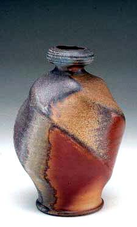
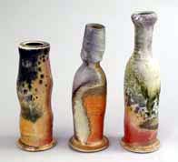
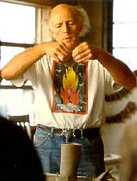

| Jack Troy
Accomplished American wood-firer
Jack
Troy is an American studio potter and teacher. He has taught at
Juniata College in Huntingdon, Pennsylvania, since 1968, where he
is now Associate Professor of Art. He is well-known amongst wood-firers
and the ceramics community in general and has held numerous workshops
and lectures on wood-firing in the US and many other countries.
He is known for his wheel-thrown, wood-fired pottery, which he
fires in an anagama kiln. He has also written two popular books
- Salt-glazed Ceramics, published in 1977 and Wood-Fired
Stoneware and Porcelain, published in 1995. He has also written
more than 50 articles in ceramics-related magazines and published
a collection of poems, Calling the Planet Home, in 2003.
Jack Troy's specialty is the anagama kiln, a wood-firing tunnel
kiln, based on medieval Japanese kilns in Bizen and Shigaraki. Large
deposits of wood ash create a natural ash glaze, the main source
of decorative effects with wood-fired ware.

His book on wood-fired stoneware covers kiln construction, clays
and glazes for wood-firing, stacking and kiln-setting, fuel, stoking
options, firing schedules and more and has become a classic reference
work for wood-firers around the globe.
The
pictured 9 inch 'Torqued Porcelain Bottle' of 2002 is a typical
anagama-fired work, displaying the effects of directional fly-ash.
The piece is particularly striking thanks to the way the color effects
wrap around the vessel, following the spiral form.
More Artists of the Week
More Articles
|